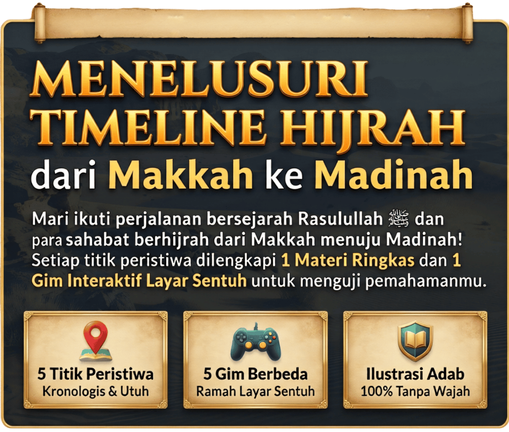
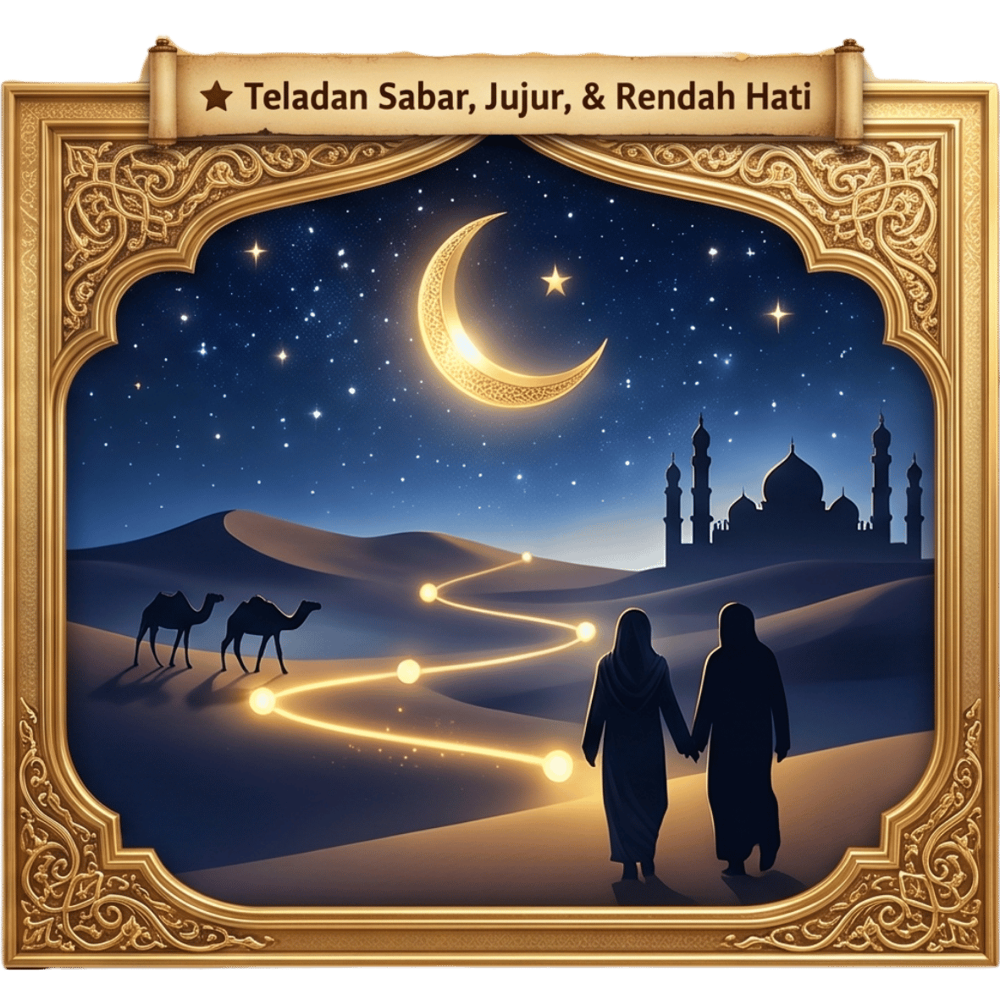

Gim Map Interaktif


Kamu berhasil menyelesaikan tantangan pada titik peristiwa ini dengan sangat baik.
1. Tujuan Pembelajaran
Setelah menyelesaikan gim ini, peserta didik diharapkan mampu untuk memahami proses hijrah Rasulullah ke Madinah beserta hikmahnya.
2. Pengembang Konten
- Ikhwanul Furqon, S.Pd., M.Pd., Gr. (SMAN 7 Kerinci)
- Redho Ade Putra, S.Pd., M.Pd., Gr. (SD IT Ibnu Abbas)
3. Sumber dan Refrensi
- Tuasikal, M.A., (2019). Faedah Sirah Nabi: Awal Hijrah Nabi ke Madinah. https://rumaysho.com/21895-faedah-sirah-nabi-awal-hijrah-nabi-ke-madinah.html
- Tuasikal, M.A., (2019). Faedah Sirah Nabi: Tiba di Kota Madinah. https://rumaysho.com/22153-faedah-sirah-nabi-tiba-di-kota-madinah-dari-hijrah.html
- Semua kerangka permainan, aset gambar, suara dan font dibuat dengan menggunakan Gemini AI